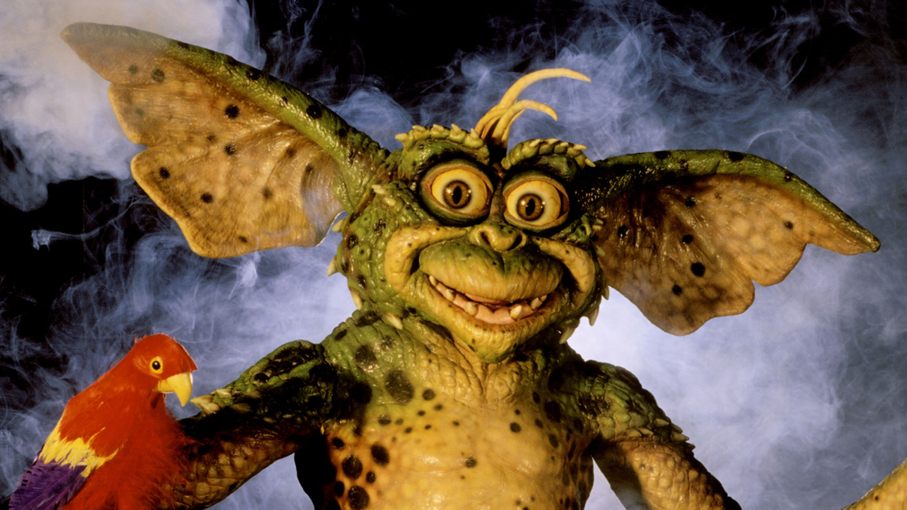

Bookmarks
@WebDev

@gremlinlover46 - Jan 15th
...
gremlins 2 is not a horror movie like the original kind of was, but it's funnier, and more
entertaining
than the original in my opinion. gremlins 2 is full of movie in-jokes, and all kinds of
other
goofy
stuff. i just believe this movie provides more entertainment than the original did. i wish
they'd make a
3rd gremlins movie. all in all gremlins 2 is great fun! i give gremlins 2: the new batch ***
out
of ****

Gremlins 2: The New Batch
The Gremlins are back, and this time, they've taken control of a New York City media mogul's
high-tech skyscraper.
@ladygaga - all of the time
...
There could be 100 people in a room. 100 people, and 99 don't believe in you. But even with 99
not believing in you, I had that one man, Bradley Cooper, believing in me.
Fans are finding it hilarious that Lady Gaga can’t stop saying the same thing about Bradley
Cooper
It seems that Lady Gaga can’t stop saying the same thing about her A Star is Born co-star
and director Bradley Cooper.